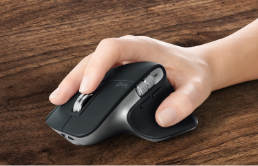

ЗА ЛЮБЫМ СТОЛОМ
Исследуйте ландшафты своего дома, не отвлекаясь от работы. MX Master 3 достаточно компактная, чтобы сменить рабочее место и перенестись с ноутбуком на кухню.
В 5 раз
точнее предшественников
4 000
точек на дюйм чувствительность датчика



Переключите поверхность
Благодаря технологии Logitecch Darkfierd, MX Master 3 работает на любой поверхности, даже на стекле.